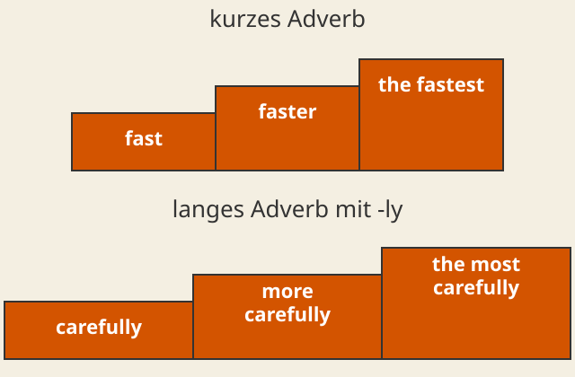

Die Treppe, zweite Seite: Adverbien steigern
Mit einem KI-Tutor lernen
Ein KI-Tutor erklärt dir diese Seite und hilft dir bei den Aufgaben. Wähl deinen Assistenten:
Mit Claude öffnen Mit ChatGPT öffnen Mit Mistral Vibe öffnen
Du nutzt dein eigenes Konto beim Anbieter. Der Assistent ist kein Angebot von lernapps.net: lernapps liefert nur Inhalte und Aufgaben. Die Wahl gilt für alle Seiten, nur auf diesem Gerät.
Wer rennt schneller?

Von links: Amir (Brille), Peter (gelbe Jacke), Ellie (roter Pferdeschwanz) und Sophie (Zöpfe).
Quelle: eigene Zeichnung. Lizenz: CC-BY-4.0.Die Kinder machen für die Ausstellung ein Wettrennen durch den Flur. Peter rennt, und Amir ist nur ein bisschen langsamer. Ellie sagt, wer vorn ist. Sie vergleicht keine Dinge, sondern Handlungen.
Aufgabe
Lösung
faster richtige Antwort
fast ist ein kurzes Wort. Es steigt mit -er, auch als Adverb.
more fast
more brauchst du bei langen Wörtern. fast ist kurz.
fastest
fastest heißt „am schnellsten“. Nach than steht aber die zweite Stufe.
Wie bei den Adjektiven steigt ein kurzes Adverb mit -er.
Mehr dazu: Lernlandkarte Englisch · Steigerung der Adverbien
Das kannst du danach: Du steigerst Adverbien und vergleichst damit, wie jemand etwas tut.
Die Treppe für Adverbien
Die Treppe hat eine zweite Seite für Adverbien. Sie hat dieselben drei Stufen wie die erste Seite. Kurze Adverbien wie fast steigen mit -er und -est. Adverbien auf -ly bekommen more und the most. well hat eine eigene Treppe, genau wie good.

Kurze Adverbien steigen mit -er und -est, Adverbien auf -ly mit more und most.
Quelle: eigene Zeichnung. Lizenz: CC-BY-4.0.| Grundform | Steigerung | Höchststufe |
|---|---|---|
| fast | faster | the fastest |
| hard | harder | the hardest |
| carefully | more carefully | the most carefully |
| well | better | the best |
| badly | worse | the worst |
Merke
Wie bei den Adjektiven: kurz gibt -er und -est, -ly gibt more und most. Zwei Handlungen vergleichst du mit than: Peter runs faster than Amir. Vor der Höchststufe darfst du bei Adverbien das the weglassen (Sophie sings best). early endet auf -ly, ist aber kurz und steigt wie fast.
| Ausdruck | Bedeutung |
|---|---|
| slowly | langsam |
| loudly | laut |
| quietly | leise |
| early | früh |
| late | spät |
| badly | schlecht |
| speak | sprechen |
| sing | singen |
| work | arbeiten |
Übung
Aufgabe
Ergänze die Treppe für das Wort early.
Tipp
early ist kurz und endet auf -y. Aus y wird i.
| Stufe | Wort |
|---|---|
| Grundform | early |
| Steigerung | … |
| Höchststufe | … |
Lösung
- Grundform · early
- Steigerung · earlier
- Höchststufe · the earliest
Aufgabe
Lösung
Richtige Antwort: late – later; loudly – more loudly; well – better; badly – worse; slowly – more slowly
Kurze Adverbien bekommen -er. Adverbien auf -ly bekommen more. well und badly haben eigene Formen.
Mehr dazu: Lernlandkarte Englisch · Steigerung der Adverbien
Aufgabe
Wähle die richtige Steigerung.
Tipp
Suche das Wort auf der Treppe. Zwischen zwei Handlungen steht than.
- Amir rennt schneller als Ellie. → Amir runs … than Ellie.
- Ellie malt vorsichtiger als Peter. → Ellie draws … than Peter.
- Amir singt besser als Sophie. → Amir sings … than Sophie.
- Sophie liest leiser als Amir. → Sophie reads … than Amir.
Lösung
- Amir runs faster than Ellie.
- Ellie draws more carefully than Peter.
- Amir sings better than Sophie.
- Sophie reads more quietly than Amir.
Aufgabe
Schreibe den Satz auf Englisch.
Tipp
Prüfe, ob das Wort kurz ist, auf -ly endet oder eine Sonderform hat.
- Amir arbeitet härter als Peter.
- Sophie spricht lauter als Ellie.
- Ellie spielt am besten.
- Peter spielt früher als Amir.
Lösung
- Amir works harder than Peter.
- Sophie speaks more loudly than Ellie. (auch richtig: Sophie speaks louder than Ellie.)
- Ellie plays the best. (auch richtig: Ellie plays best.)
- Peter plays earlier than Amir.
Aufgabe
In jedem Satz steckt ein Fehler. Schreibe den Satz richtig.
Tipp
Prüfe die Treppe.
- Amir runs more fast than Ellie.
- Ellie sings gooder than Amir.
Lösung
- Amir runs faster than Ellie. (auch richtig: Amir runs more quickly than Ellie.)
- Ellie sings better than Amir.
Aufgabe
Hör zu und schreibe, was du hörst.
- KI
- KI
- KI
Lösung
- Ellie works faster than Sophie.
- Amir sings more loudly than Peter.
- Peter works better than Sophie.
Selbst sagen und schreiben
Aufgabe
Hör zu, sprich nach und nimm dich auf. Vergleiche dann mit dem Original.
Tipp
Hör den Satz zuerst. Sprich dann langsam nach und achte auf than und more.
- Ellie speaks more slowly than Peter.KI
- Ellie speaks more quietly than Amir.KI
- Sophie runs the fastest.KI
Zum Aufnehmen braucht diese Aufgabe JavaScript. Die Beispiele kannst du auch ohne anhören.
Lösung
- Ellie speaks more slowly than Peter.
- Ellie speaks more quietly than Amir.
- Sophie runs the fastest.
Offene Aufgabe
Mr Hill schreibt die Ergebnisse des Wettrennens an die Wand. Schreibe zwei Sätze über die Kinder: einen mit einem kurzen Adverb und than und einen mit more … than oder better than.
Eine gute Antwort enthält:
Lösung
Sophie writes faster than Amir. Ellie draws more carefully than Peter.
Rückblick auf das Kapitel
Du hast jetzt zwei Anhänger und die Treppe mit ihren zwei Seiten. Der blaue Anhänger beschreibt Dinge und Personen, der orangefarbene sagt, wie jemand etwas tut. Beide Seiten der Treppe steigen gleich: kurz mit -er und -est, lang mit more und most. Mr Hill hängt die Karten auf, und die Ausstellung „Our Millbrook“ kann beginnen.
| Das willst du sagen | So geht es |
|---|---|
| wie jemand etwas tut | orangefarbener Anhänger am Verb, meist -ly |
| ein Ding oder eine Person | blauer Anhänger |
| eine Handlung vergleichen | Steigerung + than |
| das Beste nennen | the + Höchststufe, bei Adverbien darf the fehlen |